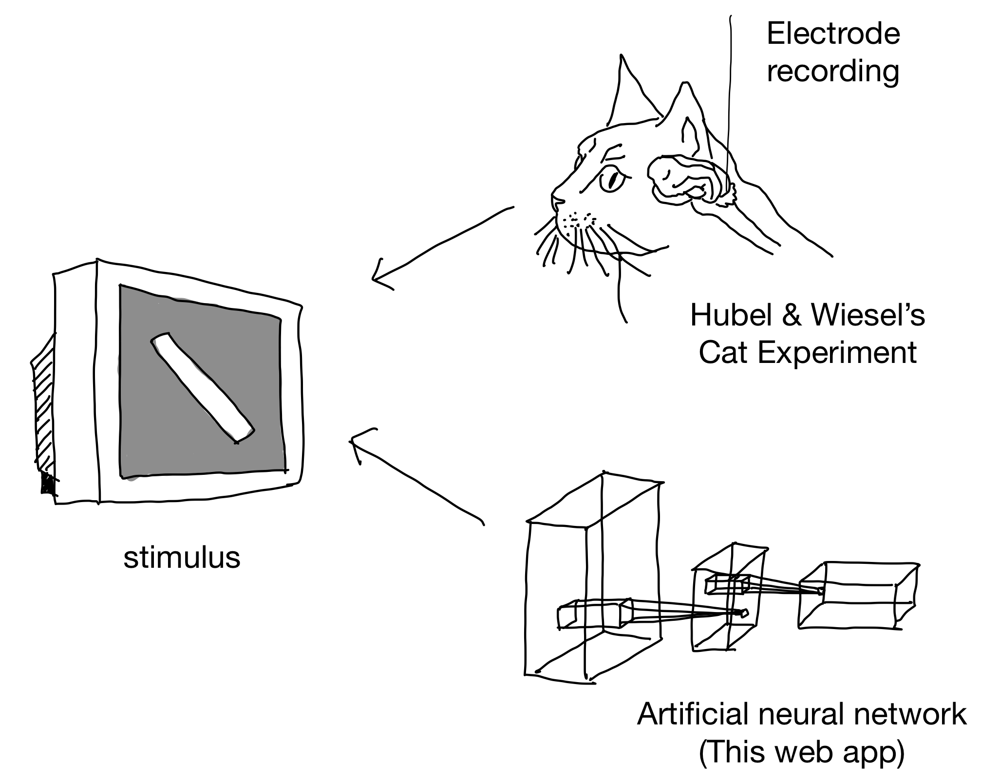
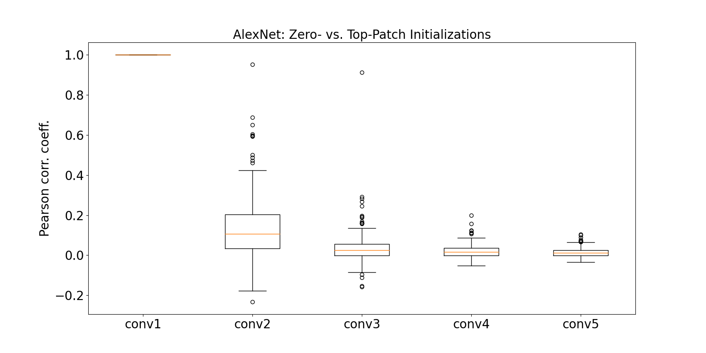

Tony Fu, Bair Lab, March 2023
Deep Dream is a technique developed by Google that uses neural networks to generate artistic images. It works by feeding an image through a trained neural network and then modifying the image to enhance the features that the network detects. This process, called gradient ascent, can be repeated multiple times to create surreal, dream-like images.

Studying Deep Dream at the neuron level helps us better understand how individual neurons contribute to the overall image generation process. This knowledge can lead to improvements in neural network architectures and training methods, as well as new ways to create artistic images using neural networks.
To study Deep Dream at the neuron level, we perform gradient ascent on individual neurons within the network, observing the resulting images and comparing them to the images generated by the full network. The dataset used in this study is the ImageNet dataset, which contains millions of images spanning thousands of categories.
GitHub Repository
For a gallery of the results, please visit the following link:
 Gallery